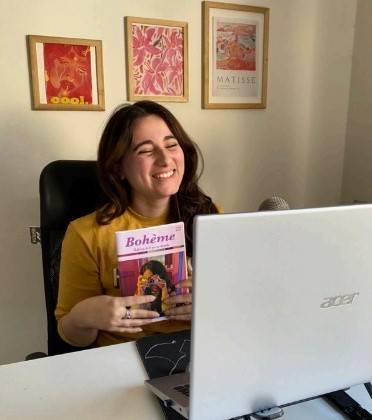

Entrevistas
“Tampoco creer que la cultura es sólo Borges”
Avalada por un reconocido discurso del icónico García Márquez, una jóven comunicadora halló la motivación necesaria para iniciar sola su propia revista cultural bajo la consigna de romper con la solemnidad de la escritura y apostar a una “pluma descontracturada”
Azul María Lardieri (23) nació en Argentina pero vivió en el sur de Francia -Montpellier- hasta sus 12 años. Allí la educación pública francesa está sobradamente ayornada en cuestiones de arte e incentiva a lxs niñxs a participar y promover la cultura: talleres de escritura en primaria, asistencia a museos, peliculas icónicas en blanco y negro, etc. Desde muy pequeña, y sin ningún familiar afín al “palo”, ella asegura tener la convicción de querer pertenecer y dedicarse a la comunicación. Allá por el 2011 cuando volvió a su país natal, advirtió que “el arte no está valorizado en Argentina” y ese fue el puntapié inicial para encarar la travesía hacia el periodismo cultural. Culminó sus estudios periodísticos con una tecnicatura en TEA, lo cual le abriría un abanico de contactos que utilizó rápidamente en su actual revista autogestiva: Bohème. Conocida en redes sociales por su pseudónimo Azul di Paolo, la jóven creadora multifacética de una revista online que incluye entrevistas, reseñas, cuentos, imágenes y hasta un podcast, nos cuenta todo sobre su pasión por la escritura, el fanatismo por los libros, la particularidad de su marca personal y consejos sobre cómo desenvolverse para forjar un camino en el periodismo actual... Contaste que siempre supiste lo que querías, ¿cuándo dijiste: “ ahora sí, soy periodista”? Me considero periodista desde los 16 años que me daban el pase de prensa en la Feria del Libro. En ese momento yo tenía un blog literario con reseñas -Little girly journalist- entonces me postulaba online, y si veían que hacías un laburo digno, te acreditaban y podías participar de las conferencias de prensa como cualquier colega. La organización del evento siempre fue muy abierta a considerar a toda persona que promueva la literatura. En definitiva siempre lo sentí, quería que el 7 de junio me saluden. Y más específicamente cuando leí el texto de Gabriel García Marquez sobre “el mejor oficio del mundo”; entendí que se lleva en el ser y ahí empecé mi proyecto. ¿Cuál fue la nota que más te atravesó? Me emociona recordarlo. Le hice una nota a un cartonero en el barrio Ciudad Jardín. Le saqué una foto y conté su historia: Juan, un adulto que sobrevive juntando cartones en la calle. Fue movilizante ya que me agradeció por elegirlo y hablar con él. Para mí eso describe el periodismo, darle voz y valor a las palabras de personas que dentro de la sociedad son casi invisibles. Tus notas escritas rozan la complicidad y cercanía con el lector,rompiendo un poco con el periodismo formal y convencional, ¿cuál considerás que es tu sello en la escritura? Sí exactamente...Mis escritores favoritos eran Roberto Arlt, más Hebe Uhart, y eso habla mucho de mí y mi redacción. Me parece que busco el quiebre de la escritura solemne. Quiero que el kiosquero de la esquina me lea y entienda. Que le llegue el mensaje. Es eso lo que quiero transmitir. O que mis abuelas que no terminaron la primaria, también puedan consumir lo que escribo. Siento que estoy más cerca de un escrito menos analítico y más literario, llevando al lector a otros puntos, no sólo a la data dura. ¿Te resulta limitante para nuevos laburos? Depende del sumario que me pidan... Por ejemplo hace poco estuve en contacto con la editora de Ohlalá -Maria Eugenia Castagnino- que se vió muy interpelada con mi laburo, y me mandó mensaje directo por Linkedin. Otras veces la pluma del periodista y lo que quiere el editor, no es compatible. Es verdad tengo una pluma bastante descontracturada, posiblemente me limite, pero ahora estoy a full con mi proyecto personal y le tengo mucha fe. Tantos años en Francia, te dieron la posibilidad de manejar más de un idioma con facilidad, ¿cómo potencias en tu trabajo periodístico esta aptitud? Realmente siento que las lenguas abren y cierran muchas puertas. Gracias a que sé 3 idiomas, puedo encontrar más información cuando investigo. También pasa que cuando no sabés traducir exactamente textos, se pierden muchos datos, por ejemplo para brindar una noticia correcta internacional o detalles trascendentes que no aparecen en los subtítulos de una película, sobre todo con el Francés que es muy complejo. Este fin de semana estuviste a full en eventos de música, ¿cómo decidís qué cobertura vale la pena? Siempre intento aceptar invitaciones que entren dentro de mi perfil editorial. Si no entra en Bohème, me duele un montón, pero lo rechazo. Porque no me identifica ni a mí, ni a mi público y no va a funcionar. Tengo muy clara la identidad de la marca. Tiene que ser bajo mi criterio lo que quiero transmitir en Bohème y la decisión es unánime. ¿Cómo decidís si la nota va a ser escrita o audiovisual? Antes editaba todo a pulmón, pero me tuve que adaptar también al contenido audiovisual por el tema del alcance. Entonces mis notas cuando las escribo pretendo que todas sean atemporales para que puedan leerlas en la revista de acá a un mes o un año. En cambio lo inmediato -pelis a estrenar, u obras de teatro que están en cartelera- lo hago en formato video en redes. ¿Por qué en redes aparecés como Azul di Paolo? (suspiro de sorpresa) Decidí que iba a ser mi pseudónimo porque era el apellido de mi bisabuela, y ella fue mi primera fan. Asimismo fue la verdadera fanática de la sección de “cartas al lector” de Clarín, y me obligaba a leer con ella notas muy lindas. También por un tema de privacidad, para no aparecer en todo internet. Y me terminé de convencer en una nota que me hicieron en una radio cooperativa donde el locutor antes de presentarme me comenta que mi apellido real -Lardieri- era muy complicado. Me recomendó para que no lo digan o escriban mal que invente otro. Así nació mi alter ego (risas)